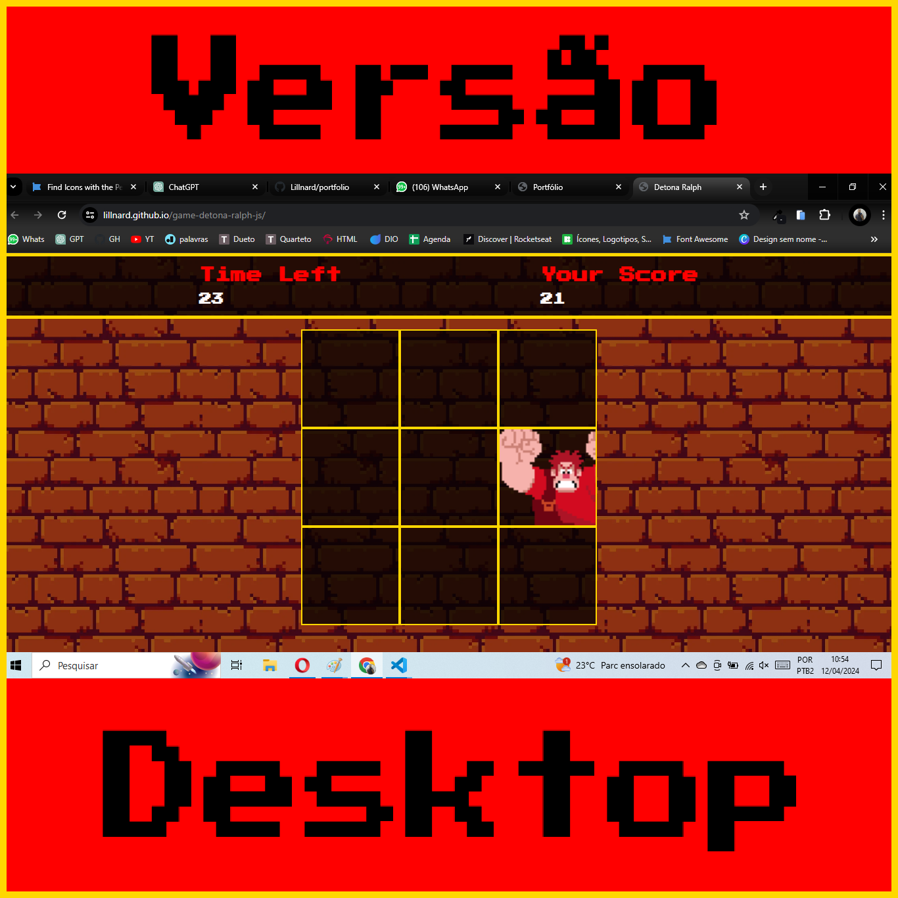
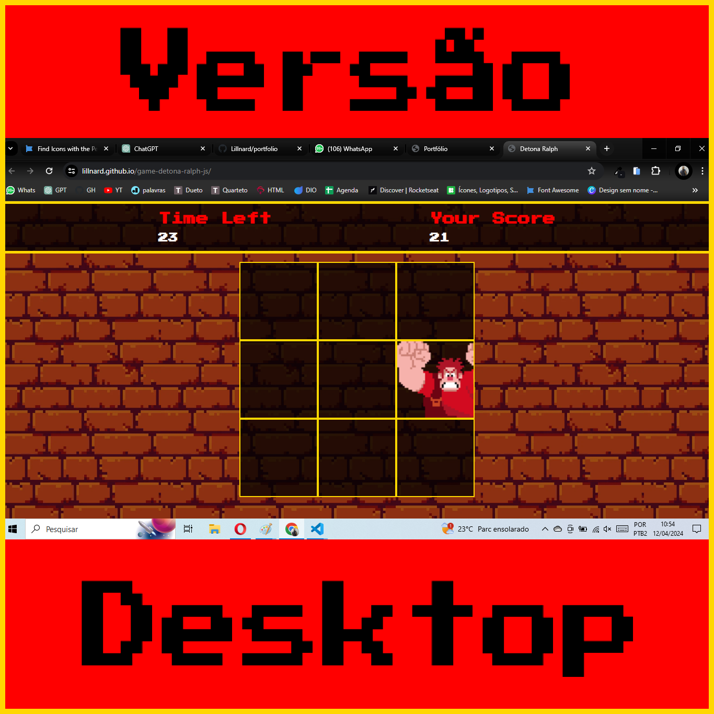

Oi, eu sou o Léo!
Desenvolvedor Web
Seja bem-vindo(a)!
Esta é a primeira versão do meu portfólio
e ainda está passando por constantes alterações.
Sinta-se a vontade para explora-lo
e conhecer um pouco sobre mim
Ah, e se quiser ver o código do portfólio
É só clicar AQUI ou na foto desse BONITÃO aí do lado!
Ah, e se quiser ver o código do portfólio
É só clicar AQUI ou na foto desse BONITÃO aí em baixo!

MINHAS HABILIDADES
Veja abaixo uma lista com as minhas principais habilidades


.png)
.png)


MEUS PROJETOS
Player de música - SpotiFAKE
• Cada um tem o Spotify que merece, não √© mesmo?
• Pedi pra minha esposa me mandar as 10 músicas favoritas dela, e fiz esse TOP 10!
• Na verdade √© TOP 11 (Ela se empolgou e me mandou uma música a mais)
• Escuta tudo a√≠ e depois me conta o que achou!
Tecnologias Usadas no projeto:


 

Jogo de clique - Detona Ralph
• Feito com HTML, CSS e Javascript
• Este foi um dos meus primeiros projetos
• Foi criado durante o curso de desenvolvimento de jogos, da DIO
• Ainda tem algumas features que pretendo implementar
Tecnologias Usadas no projeto:

OLÁ... MUITO PRAZER!
E aí, Bão? Vou me apresentar rapidinho, bora lá...
Meu nome é Leonardo Fonseca, um apaixonado por tecnologia que estava perdido na área comercial
Atualmente estou em transição de carreira, possuo mais de 15 anos de experiencia no setor imobiliário, e trago comigo várias habilidades que acredito que podem agregar bastante na área tecnológica
Dentre essas Soft Skills estão:
• Comunica√ß√£o assertiva • Boa capacidade de Negocia√ß√£o e persuasão • Criatividade • Rápida tomada de decis√µes • Pensamento cr√≠tico • Alta adaptabilidade • Facilidade com trabalhos em equipe • Intelig√™ncia emocional • Motiva√ß√£o • √âtica profissional • Alto senso de responsabilidade • Confiabilidade
Meu foco agora está voltado para buscar o máximo de conhecimento üëΩ e desenvolver as minhas habilidades nessa nova área üññüèªüëäüèª
Estou cursando Análise e desenvolvimento de Sistemas (ADS), e direcionando os meus estudos rumo ao desenvolvimento FullStack, mas no momento eu tenho maior domínio sobre as tecnologias do FrontEnd
Disponibilizei uma versão do meu Cúrriculo, é só clicar no botão abaixo (Mas não se esqueça de voltar aqui depois, hein!)
FAQ
Quais são os seus pontos fortes?
E pra come√ßar com chave de ouro, temos ela... A rainha das perguntas de entrevistasüëë
Vou tentar ser o mais sincero o possível
Enquanto isso, mil perfeccionistas cairão ao teu lado, e dez mil workaholics à tua direita; mas tu não serás atingido
Pensamento rápido, alta capacidade de resolver problemas e muita criatividade, eu diria que essas são os meus maiores pontos fortes... E pensando bem, eu acho que fui um pouco clichê na resposta, mas é tudo verdade... juro!
E quais são os seus maiores pontos fracos?
Essa eu nem preciso pensar muito... √â claro que √© o PERFECCIONISMO üôÑ
Brincadeira, e pra falar a verdade o meu maior defeito durante vinte e poucos anos da minha vida, sempre foi a falta de organização e a dificuldade em colocar algumas coisas em prática.
Só que de alguns anos pra cá, as coisas mudaram, o pequeno Léo casou e teve que dar um jeito de criar alguns métodos para poder se organizar melhor, para não matar sua pobre esposa de desgosto... E é claro que isso acabou se refletindo na minha vida profissional.
Desorganizado sim, mas despreparado nunca... Desde que eu tenha acesso ao meu celular, ao meu computador, ou qualquer tipo de tecnologia mais arcáica, como folhas de papel e caneta, eu consigo me planejar e botar ordem no caos.
Hoje em dia eu até posso ser desorganizado, mas sou o cara desorganizado mais organizado que já pisou nessa terra
Qual é o seu objetivo profissional?
Eu estou buscando a minha primeira oportunidade na área de tecnologia, seja um estágio, para desenvolver mais minhas habilidades, ou como dev jr.
Estou me esforçando bastante nos estudos para aprender o máximo que eu puder
Então se tiver uma vaguinha sobrando a√≠, lembre de mim üòÅ
Você consegue trabalhar sob pressão?
Claro... Desde que não acabe meu estoque de caf√© e ainda tenha algum mil√≠metro de unha pra roer... Tudo vai ficar bem ü§™
Trabalhar com venda e locação de imóveis em um país com uma economia que não é das melhores é sempre um bom teste pra cardíaco, amigos...
Metas novas (cada vez mais altas)para serem batidas, um boleto novinho em folha que descobriu o meu endereço de e-mail e as comissões das vendas que andam de transporte publico e sempre atrasam
É um trabalho muito bom, mas trabalhar com vendas é andar lado a lado com a pressão o dia todo.
Por que eu deveria ser contratado?
Porque, primeiramente, como pode perceber, eu domino a utilização dos porquês, o que já é um baita diferencial
Além disso, embora eu não tenha experiência prática nessa área, tenho bastante experiência profissional, com atuação diretamente com o público, o que proporciona um bom bocado de habilidades muito úteis
Lidar com pessoas me ensinou a ser criativo, pensar fora da caixinha e a trabalhar duro para atingir os meus objetivos.
Então agora você deve estar pensando em como tem sorte em ter um profissional tão qualificado e ainda por cima com um senso de humor sensacional ( ou no mínimo duvidoso)
Sim... Voc√™ √© realmente muito sortudo, então aproveite que a sorte bateu √† sua porta e entre em contato comigo, que vai ser um prazer me contratar (Ok, isso ficou um pouco estranho üôÉ)
SINCERÃO
Já que chegou até aqui, deixe um like se gostou do que viu até agora